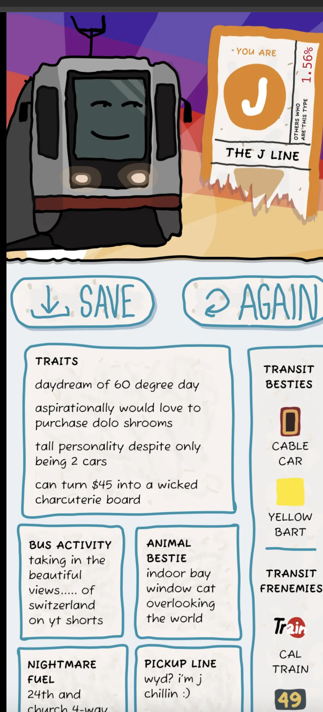
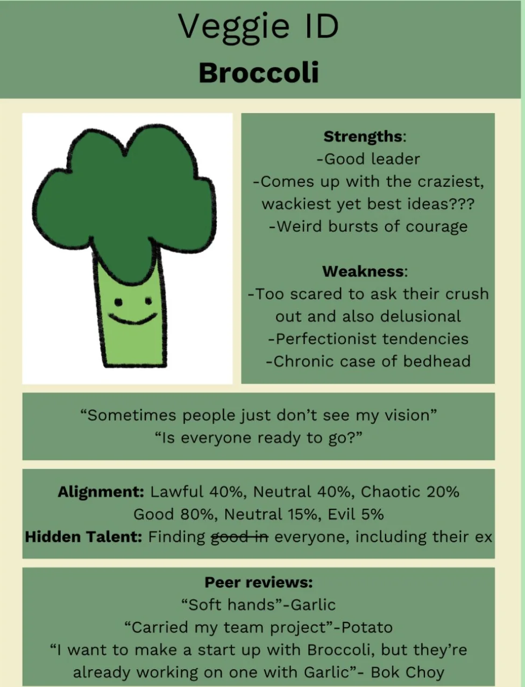
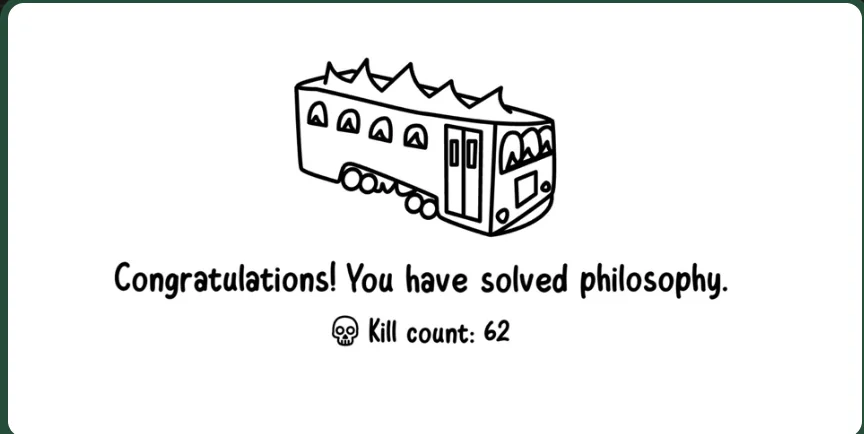
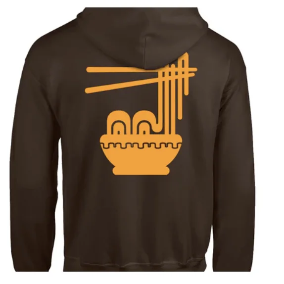
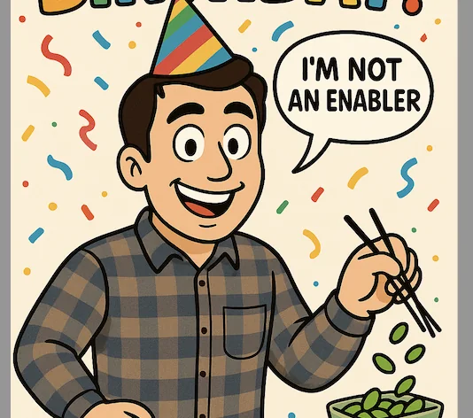

Previous newsletters
If you want to see any of the previous newsletters look here
Shoutouts
Shoutout to “The fisherman” for starting a newsletter of her own. This is awesome and I never thought I’d actually inspire someone else to do something like this. The first issue came out and it was great! Really appreciated the thoughtfulness, vulnerability, and your funny comments! Can’t wait for the next issue
Shoutout to “The Raven Keeper” for getting a new job! Congrats and I hope this new job is a lot of fun!
Shoutout to “The Bar tender”. Happy birthday! You’re grilling skills definitely meat expectations
And finally shoutout to “The Enabler”. Happy birthday again! Already wished ya so will keep it brief but wanted to let the wider newsletter community know too :D.
Personality quizzes
Last week “The Shadow brigade” sent me some personality quizzes. I’m gonna put them here along with my results in case anyone else wants to take them
Muni Personality quiz
Quiz is here https://sftransit.fun/
My results

Vegetable quiz
Quiz is here

Absurd Trolley quiz
Quiz is here

Monday
To end the cliffhanger from last week I sent the message to the girl I asked out and as a wiseman once said “When there is no response, there is a response.” Ah well is what it is.
Today is a pretty normal day. After work I just go home and chill out. I flirt with the idea of going to chess club but opt against it. Instead I decide to start coming up with clues for a scavenger hunt I’m planning with “The Professor”. Everyone reading this is invited! Link is here hope to see ya’ll there!
Tuesday
Nothing particularly crazy today. Just an ordinary day at the coding factory.
Wednesday
Today after work I go to Midnight Runners. For the first time in a while I didn’t have friends I was planning to meet so I wind up catching up with an acquaintance and some of his friends. I certainly didn’t expect that when I met up with this group I would be drafted into one of his friends “dating council”s.
Essentially one of the friends (who we’ll call Sergeant Sassy) likes a guy and wanted to ask him out on a date. She went out with him to trivia at a bar for what she thought was a date but unfortunately that wasn’t communicated well and now she wants to explicitly say that she wants to have a date. We all brainstorm ideas and muster all 4 of our brain cells for how she can go about this and ultimately the simple but effective approach of saying “Hey I like you and I want to go out on a date are you interested?” wins out. Together we send the message and wait. The moments leading up to the message have a distinct rise in tension which drops down briefly as we celebrate the initial success in sending the message. For a brief moment we all catch our breath as the message has been sent. Briefly we distract ourselves with other matters before immediately seeing these
This induces a feeling that internet scholars call “Three dot anxiety” in all of us. Unlike my attempt to ask someone out it looks like here we’ll immediately get to see the fruit of our labors. And … he said yes! He also wants to go out on a date with Sergeant Sassy. I’m really happy that one attempt to ask out on a date went well this week! For a while longer the council continues to help the sergeant plan logistics and figure out the rest of when the date will happen and so on. Since the original attempt at a date was at a trivia night I suggested she send a text along the lines “I guess that first attempt was a trivial pursuit :D”. While it wasn’t sent it did get a laugh out of the group so we’re calling that a win.
Oh yeah and in case you were curious the reason I called this person Seargant Sassy was because I asked her my standard question “whats something cool or interesting that people wouldn’t expect” and the answer she gave is that shes sassy so I guess thats what we’re going with here.
Addendum 9/11: Turns out I misremembered this, it wasn’t her who said she was sassy, one of her friends said that. I apologize for spreading such blatant misinformation throughout the interwebs.
Thursday
Today after another day slinging python originally I was gonna go to a dating event with “The Raja of Rhythm" but I wind up cancelling and playing online Dune with some friends tonight. While I would have liked to go to the dating event it was really important that I play with my friends tonight and I think we all know the dating event would have ended with me getting rejected by everyone anyway. Don’t worry there will be plenty more opportunities for me to be rejected! The game of Dune itself goes pretty much the way I wanted. While I lost the battle I did win the war so to speak. Also I made great progress in what we might call “Blitz Dune” where I limit my moves to 20 seconds while my opponents take on the order of minutes.
Friday
Today after work I go with “The Plower,” “The Quant,” “The Professor,” “The Pickeballer,” and “The Plowers,” boyfriend to a restaurant called Prime BBQ down in San Mateo. As the name implies its a BBQ place with a wide variety of grilled meats and veggies. This is one of the few places “The Plower” will eat at (a list that includes roughly 4 places) and the meat there winds up being quite good! The beef tongue in particular is amazing and the tendon and lamb are quite tasty as well. The one annoying thing is the place proved to be on the spicier side which my poor sensitive tongue cried about.
Afterwards we go to Na Ya desert cafe over in Hayes Valley. I wanted to do my usual here and get nothing but they have a minimum amount per person so I make it a point to tell the waiter I am getting the cheapest thing I can to meet the minimum and refuse to have any of it. Its important I stand up for my principles here. They can make me spend $$ but they can’t make me eat their food 😤.
Sadly I get an unfortunate surprise when I get home and two packages that were supposed to be delivered weren’t there. These were both jackets I was very excited for. One of them was this ramen MUNI hoodie and the other was a custom Mooni hoodie that I ordered.

I’m trying to get in contact with the sellers and see if they can resend them. Worst case I may have to re order because I really do want both of these 😢
Saturday
The day begins with trash pickup as per usual. After another battle with the streets I do some errands and mostly just chill until evening. I did happen to learn that there was an SF standard article about two guys who walked 100k steps in a single day. As someone who did the exact same thing I wonder what did these hooligans have to do to get an article about them. I mean sure they posted on reddit and all but still! You know they slept before they did it unlike me so really they did it on easy mode
When evening comes I head over to “The Enabler’s” birthday party! One of his friends has an apartment with a super nice rooftop that we reserved for a while. I decide to get him a birthday card like this

Astute readers may remember a few episodes ago when I did the Amazing Race and me and my team had to pick edamame with chopsticks and put them in a container. Throughout the evening I try to get different folks to sign the card until I have a full card of signatures. And as a bit of a side bit I try to hide this from him by keeping the card awkwardly behind my back and giving it to his girlfriend to give to him. I wanted it to be a bit of a mystery as to who actually created the card. While the card went great the mystery part fell a bit flat. I guess I need to actually go to chess club so I can be the chessmaster I dream of being.
I also try to think of what a good birthday present would be for him but sadly I can’t come up with anything that meets my bar for a good birthday present. For context I very much dislike giving thinks like gift cards. My ideal present is something that either only he would like, something only I would give him, something that is a call back to a specific moment in our friendship, or some combination of the above. Sadly nothing comes to mind that fits this description. By chance I happen to come across a $5 coupon at Buffalo Exchange and while its not the best I do know he likes thrift shopping so I figure its better than nothing and give it with the birthday card.
While at the party there a bunch of mini stories that I thought were fun or at the very least meet the mildly amusing bar to be put on the newsletter.
Mildly amusing story 1
I meet someone who works in social services over at UCSF. I ask her that since a lot of people WFH if she ever WFTs (Works from Tenderloin). This gets a mild laugh.
Mildly amusing story 2
The apartment that we’re at happens to have a set of giant Jenga. A bunch of people are playing and the game manages to last for something like 10-12 minutes which is pretty impressive. The game winds up ending around 9:13. Personally I wish it had ended two minutes earlier as 9:11 would have been a great time to bring down the Jenga tower. I almost debated muscling my way into the game to ensure it but opted against it. I also want to start playing more Jenga so I can start using the joke “I feel like I’d be very good at Jenga. As a Muslim I can definitely bring down a tower”
Mildly amusing story 3
I meet someone and the first thing she asks is “Whats a fun fact about you?”. This made me really happy as its the first person I met to ask the same sort of question back to me! I asked her why she asked and she said I seemed like a fun fact kinda guy. I tell her about my time walking the Humza trail. Really the story here is more in the fact that she asked the question. I asked her what her answer was and she mentioned that she came to the US when she was married. Interestingly despite asking the question she didn’t have a prepared answer unlike me. Maybe I should start answering more off the cuff
Mildly amusing story 4
When talking with the girl from the story above and her husband I learn they are helping to throw a big block party in the Mission and since they’re public transit nerds they’re interested in “Mooni” stickers (essentially sticker forms of the Mooni hoodie that I made). They got a grant from an organization called franciscosan which gives money for things that add whimsey to SF. I very much want to make stickers and give them to this party because I applied for a franciscosan grant a while back to fund snacks and drinks for a walk around the perimeter of SF and they had the gall to not respond to me so now I want to find another way to take some of their money for my own fun ideas and it looks like this is it 😤
Well thats the end of the mildly amusing stories I hoped you enjoyed those as much as I did. With that lets get back to the party. After a bunch of mingling, socializing, and drinking (for other people) a cake is cut and the time on the rooftop ends. The party continues over at some clubs but I opt to go home. I don’t really like clubs as much because I prefer going to places where I can talk with folks. Instead I go clubbing over at the Humza cave where we have no music and some sheets to sleep on.
Sunday
The day again begins with trash pickup. Right next to Trash pickup there is a wedding brunch for some couple. After the trash is picked up I briefly crash the wedding brunch to see how the food they have compares to our trash pikcup brunch (spoiler alert our brunch is better).
At one point I briefly consider going up to the bride and groom and congratulating them on the wedding on behalf of the trash pickup community and taking a selfie on the polaroid they have in the room. I find the thought gives me a bit of anxiety which sucks because I hate feeling anxious about this sort of stuff. Ideally I’d have the confidence to just do it. I do decide to get a 2nd opinion on the situation and ask some of my friends. I cleverly decide to mask it in a hypothetical by saying this is “about a friend” rather than me which will no doubt throw them off the scent that its really me asking about this … well until they read this newsletter anyway. Ah well thats a problem for when that happens.
The consensus I get is I shouldn’t go up to them and let them have their day. Perhaps my anxiety in this case was good as it protected me from doing something I shouldn’t have but I still hate that I felt anxious. My ideal version of myself would have the confidence to act on anything I thought was interesting (regardless of whether I do it or not).
Unfortunately I can’t stick around too long at the post trash pickup hang as I have a birthday to go to. Its “The bartender’s” (belated) birthday party. We go over to his house in Piedmont where he grills a whole bunch of meat for us which is delicious. Sadly I have less fun stories from this birthday party but its still a great time.
Afterwards I go to meetup with a friend for dinner where I find the only Mexican place where I had to wait 50 minutes to get tacos. This was a crime against nature. The food itself was good, dare I say above average, but the wait was unforgivable. From there I go home and write up the newsletter.